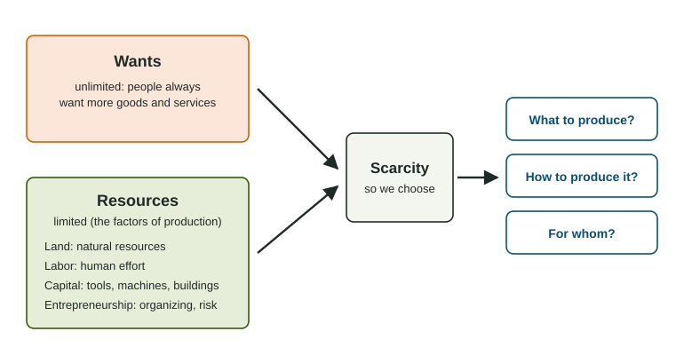

Scarcity
Scarcity means wants are greater than the resources to meet them, so every person, business and government must choose, and every choice is a trade-off.
Part 1 · Hook
Why this matters
Part 2 · Prerequisite check
Quick check before you start
1. On a market graph, which variable goes on the vertical axis?
- Price
- Quantity
- Income
- Time
Show the answer
Price is vertical and Quantity horizontal on every market graph.
- Correct: Price:
- Quantity:
- Income:
- Time:
2. A variable on one of a graph's axes changes. On the graph you see
- a movement along the curve
- a shift of the curve
- a new axis
- no change
Show the answer
Only a change off the axes shifts a curve.
- Correct: a movement along the curve:
- a shift of the curve:
- a new axis:
- no change:
Part 3 · See it
See it first

Part 4 · Step by step
How it works, step by step
- People's wants are unlimited, but land, labor, capital and entrepreneurship are limitedresources are scarce
- Resources are scarceevery person, firm and government must choose how to use them
- Choosing one use of a resourcemeans giving up another use: a trade-off
- A whole society faces those choicesits economic system decides what to produce, how and for whom
Part 5 · Key ideas
Key ideas
- Scarcity: wants are greater than the resources to meet them. It applies to rich and poor, and to time as well as money.
- The four factors of production: land (natural resources), labor (human effort), capital (tools, machines, buildings) and entrepreneurship (organizing and risk-taking). Money is not one of them.
- Every choice is a trade-off: using a resource one way means not using it another way.
- Market, command and mixed economic systems answer what, how and for whom in different ways; most real economies are mixed.
Part 6 · Misconception
A common mistake
The wrong idea: Money is capital, so a business that borrows money has gained a factor of production.
What actually happens: In economics, capital means made goods used to produce other goods, such as machines and buildings. Money buys factors of production but is not one itself.
Part 7 · Check yourself
Check yourself
Exam-style questions. Anything you miss goes into your review queue.
Scenario
One empty lot in Riverton
The town of Riverton (an invented town) owns one empty lot downtown. Residents want a park, store owners want a parking garage, and a grocery chain offers to lease the lot for a new store. Building the garage would take a crew of 40 construction workers, two cranes and a fleet of dump trucks, and a local developer has offered to put up her own savings to run the project.
1. What makes the choice about Riverton's lot an economic problem?
- The town has run out of money for any project
- The lot cannot be used for a park, a garage and a store at the same time
- Store owners care more than residents do
- The grocery chain sets the price of the lease
Show the answer
Scarcity: one limited resource and several wants for it, so the town must choose.
- The town has run out of money for any project: The scenario says nothing about the budget; even a rich town faces the choice.
- Correct: The lot cannot be used for a park, a garage and a store at the same time: Right: limited land, unlimited wants for it, so a choice must be made.
- Store owners care more than residents do: How much each group cares does not create the problem; the limited lot does.
- The grocery chain sets the price of the lease: The lease price matters for the choice but does not create the scarcity.
2. Which factor of production is the lot itself?
- Land
- Labor
- Capital
- Entrepreneurship
Show the answer
Land means natural resources and the ground itself.
- Correct: Land: Right: the lot is a natural resource.
- Labor: Labor is human effort, such as the construction crew.
- Capital: Capital is made tools and buildings, such as the cranes.
- Entrepreneurship: Entrepreneurship is the organizing and risk-taking of the developer.
3. In the garage plan, which item is capital?
- The 40 construction workers
- The empty lot
- The developer's willingness to risk her savings
- The two cranes and the dump trucks
Show the answer
Capital is goods made to produce other goods: machines, tools, buildings.
- The 40 construction workers: Workers supply labor.
- The empty lot: The lot is land.
- The developer's willingness to risk her savings: Taking the risk and organizing the project is entrepreneurship.
- Correct: The two cranes and the dump trucks: Right: cranes and trucks are made tools used in production.
4. The developer offers her own savings to run the garage project. Which factor of production does she supply, and why?
- Capital, because she provides money
- Labor, because she works on the project
- Entrepreneurship, because she organizes the project and takes the risk
- Land, because the garage sits on the lot
Show the answer
Entrepreneurship combines the other factors and bears the risk. Money by itself is not a factor; it buys factors.
- Capital, because she provides money: In economics capital means tools, machines and buildings, not money.
- Labor, because she works on the project: Her role is to organize and take the risk, not to do the construction work.
- Correct: Entrepreneurship, because she organizes the project and takes the risk: Right: she organizes and risks her savings.
- Land, because the garage sits on the lot: The lot is land, but she does not supply it; the town owns it.
5. Which statement about scarcity is accurate?
- It ends once a country becomes rich enough
- It exists because wants are greater than the resources to meet them
- It applies to goods but not to time
- It means a store has sold out of a product
Show the answer
Scarcity is the gap between unlimited wants and limited resources. Rich countries and rich people face it too.
- It ends once a country becomes rich enough: Wealthy societies still cannot have everything they want.
- Correct: It exists because wants are greater than the resources to meet them: Right: limited resources, unlimited wants.
- It applies to goods but not to time: Time is one of the scarcest resources there is.
- It means a store has sold out of a product: A sold-out product is a temporary market problem; scarcity is permanent.
6. Which of these are capital in the economic sense? Select all that apply.
- A delivery van owned by a bakery
- A robot arm on a car assembly line
- Cash a bakery keeps in its bank account
- Crude oil still in the ground
Show the answer
Capital is goods made to help produce other goods. Money is not a factor of production, and oil in the ground is land.
- Correct: A delivery van owned by a bakery: Right: a made good used to deliver bread.
- Correct: A robot arm on a car assembly line: Right: a machine used to build cars.
- Cash a bakery keeps in its bank account: Money buys factors of production but is not one.
- Crude oil still in the ground: An unextracted natural resource is land.
7. A neighbor says, "Scarcity is not a problem for billionaires." What is the best reply?
- They still face limited time and must choose how to use it and their money
- They are right: with enough money each want is met
- They are right, at least in a market economy
- Scarcity applies to governments, not to people
Show the answer
Even very rich people have limited time and face choices among wants, so scarcity applies to everyone.
- Correct: They still face limited time and must choose how to use it and their money: Right: time, at least, is always limited.
- They are right: with enough money each want is met: Money cannot buy more hours in a day, and wants keep growing.
- They are right, at least in a market economy: Scarcity does not depend on the economic system.
- Scarcity applies to governments, not to people: Every person, firm and government faces scarcity.
Part 8 · Summary
Summary
Part 9 · Up next
What comes next
Part 10 · Connections